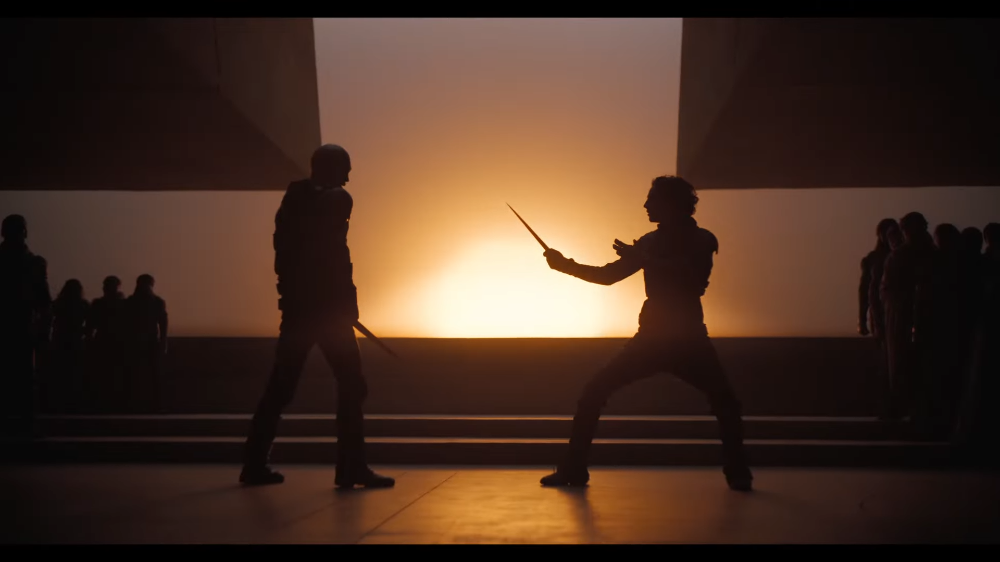

"Dune: Part 2" delivers an epic continuation of the saga set in the
vast and immersive world of Frank Herbert's classic sci-fi universe. Director Denis Villeneuve's
vision is as sweeping and visually stunning as ever, drawing audiences deeper into the intricate politics,
mysticism, and conflicts of Arrakis. With its stellar performances, breathtaking cinematography, and gripping
storytelling, "Dune: Part 2" is a triumph of modern filmmaking.

Paul Atreides fights Feyd Rautha in the climactic battle of Arrakis.
"Dune: Part 2" is a cinematic tour de force that captivates audiences with its epic scope,
compelling characters, and breathtaking visuals. It's a must-see for fans of the genre and a worthy continuation
of the Dune legacy. If you don't believe me, just watch this trailer.